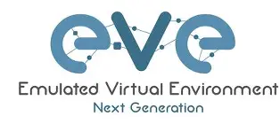
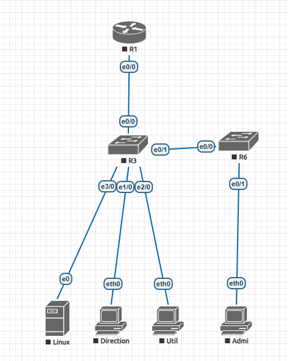

Qu’est-ce que l’administration réseau ?
Ce domaine couvre la gestion, la configuration et la sécurisation des réseaux informatiques. Cela inclut les routeurs, les commutateurs, les pare-feu, les serveurs et les services Internet.
Compétences développées
- Configurer des équipements réseaux
- Surveiller le trafic et les performances
- Déployer des services (DNS, DHCP, VPN...)
- Appliquer les bonnes pratiques de cybersécurité
SAÉ1.01 - Sensibilisation à l'hygiène informatique et à la cybersécurité
Au cours de ce travail en autonomie en début d'année nous avons pu travailler notre sensibilité et notre vigileance pour les attaques possibles des cyberpirates.
Pour cela, la classe a eu à traité de plusieurs attaques ou plusieurs méthodes d'attaques pour infiltrer ou encore voler des informations d'entreprises comme des particuliers.
Mon groupe a du traiter les attaques du à l'ingénierie social, cela nous a permis de prendre conscience de l'importance et l'aissance de cette attaque mais surtout de son efficacité surtout chez les entreprises nombreuses, pas forcement préparé à ce genre d'attaque.
Pour ce travail on a été en binome et on a dus réaliser une vidéo d'explication de cette methode d'attaque mais aussi, comment s'y défendre et s'en protéger. Voici la vidéo :
Ce projet m'a permis d'acquérir de nouvelles compétences tel que la création, l'élaboration d'une video mais aussi d'approfondir mes compétences et ma capacitée à faire des recherches de manière efficace et optimisé.
SAÉ1.02 S’initier aux réseaux informatiques
Pour que l'on découvre la réalisation et la mise en oeuvre d'un réseau dans une sucursalle grâce à l'application EVENG.
Pour ce travail en autonomie on avait comme consigne que sur l'application EVENG de réaliser la maquette d'une sucursalle qui soit complètement fonctionnel sous cette topologie suivante:
Pour ce travail en autonomie j'ai pu rencontrer plusieurs problèmes sur l'application elle même car plusieurs bug peuvent être trouvé dans l'importation du projets sur les machienes de l'IUT.
Pour finir, les compétences que j'ai pu acquérir est l'administratrion de réseau car j'ai dus créé, supervisé et coder chaque équipements pour qu'ils puissent tous avoir leurs bonne configuration dont un DHCP ou encore un serveur Linux.
Pour information : Je n'ai mis que les travaux en autonomie du premier semestre du faite que les travaux en autonomie du second semestre ne sont pas encore terminés ni rendu.